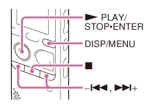
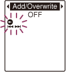

IC RecorderICD-PX333/PX333F
Using the menu

- Press and hold DISP/MENU to enter the menu mode.
The menu mode window will be displayed.

- Press –
 or
or  + to select the menu item for which you want to make setting, and then press
+ to select the menu item for which you want to make setting, and then press  PLAY/STOP・ENTER.
PLAY/STOP・ENTER.
When you select “Divide,” “Move & Copy,” “Delete,” or “Detail Menu,”press –
or + to select their sub
menu item for which you want to make
setting, and then press PLAY/STOP・ENTER. - Press – or + to select the setting that you want to set, and then press PLAY/STOP・ENTER.
- Press – or + to make the setting,
and then press PLAY/STOP・ENTER.
- Press
 (stop) to exit the menu mode.
(stop) to exit the menu mode.
Note
- If you do not press any button for 60 seconds, the menu mode is automatically canceled and the window will return to the normal display.
Hint
-
To return to the previous window, press DISP/MENU during menu operations.
When the selection screen of the sub menu screen is displayed after you select “Divide,” “Move & Copy,” “Delete,” or “Detail Menu,” press –
or + to select “Back,” and then press PLAY/STOP・ENTER to return to the main menu window. - To exit the menu mode, press (stop).